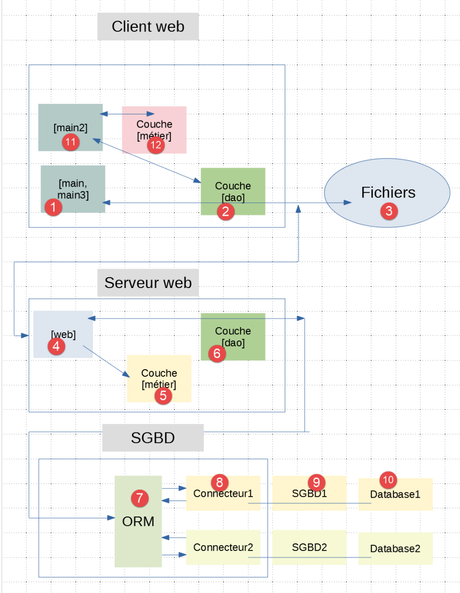
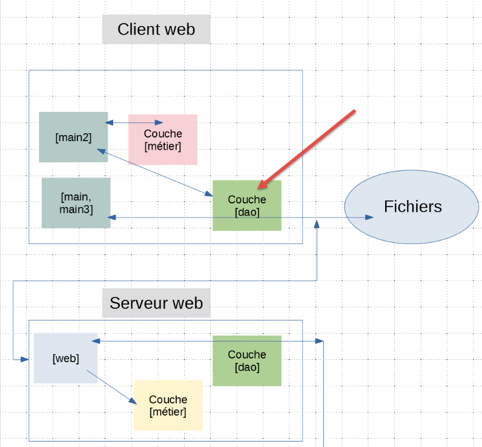
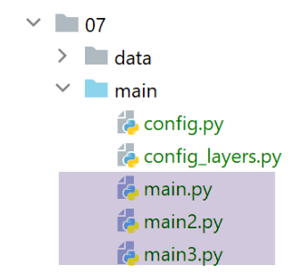

31. Clients web for the jSON and XML services of version 12
We will write three console client applications for the jSON and XML services of the web server we just wrote. We will use the client/server architecture from version 11:

We will write three console scripts:
- the [main] and [main3] scripts will use the [métier] layer of the server;
- the [main2] script will use the [métier] layer on the client;
31.1. The script directory structure for clients
The file [http-clients/07] is initially created by copying the file [http-clients/06]. It is then modified.

- into [1]: the data used or created by the client;
- into [2], the client’s configuration and console scripts;
- into [3], the client’s [dao] layer;
- in [4], the test folder for the client’s [dao] layer;
31.2. The [dao] layer of clients


31.2.1. Interface
The [dao] layer will implement the following [InterfaceImpôtsDaoWithHttpSession] interface:
from abc import abstractmethod
from AbstractImpôtsDao import AbstractImpôtsDao
from AdminData import AdminData
from TaxPayer import TaxPayer
class InterfaceImpôtsDaoWithHttpSession(AbstractImpôtsDao):
# tax calculation per unit
@abstractmethod
def calculate_tax(self, taxpayer: TaxPayer):
pass
# batch tax calculation
@abstractmethod
def calculate_tax_in_bulk_mode(self, taxpayers: list):
pass
# session initialization
@abstractmethod
def init_session(self, type_session: str):
pass
# end of session
@abstractmethod
def end_session(self):
pass
# authentication
@abstractmethod
def authenticate_user(self, user: str, password: str):
pass
# list of simulations
@abstractmethod
def get_simulations(self) -> list:
pass
# delete a simulation
@abstractmethod
def delete_simulation(self, id: int) -> list:
pass
# obtain data for tax calculations
@abstractmethod
def get_admindata(self) -> AdminData:
pass
Each method of the interface corresponds to a URL service of the tax calculation server.
- line 7: the interface extends the [AbstractDao] class, which manages access to the file system;
The mapping between the methods and the URL service is defined in the [config] configuration file:
# tax calculation server
"server": {
"urlServer": "http://127.0.0.1:5000",
"user": {
"login": "admin",
"password": "admin"
},
"url_services": {
"calculate-tax": "/calculer-impot",
"get-admindata": "/get-admindata",
"calculate-tax-in-bulk-mode": "/calculer-impots",
"init-session": "/init-session",
"end-session": "/fin-session",
"authenticate-user": "/authentifier-utilisateur",
"get-simulations": "/lister-simulations",
"delete-simulation": "/supprimer-simulation"
}
31.2.2. Implementation
The [InterfaceImpôtsDaoWithHttpSession] interface is implemented by the following [ImpôtsDaoWithHttpSession] class:
# imports
import json
import requests
import xmltodict
from flask_api import status
from AbstractImpôtsDao import AbstractImpôtsDao
from AdminData import AdminData
from ImpôtsError import ImpôtsError
from InterfaceImpôtsDaoWithHttpSession import InterfaceImpôtsDaoWithHttpSession
from TaxPayer import TaxPayer
class ImpôtsDaoWithHttpSession(InterfaceImpôtsDaoWithHttpSession):
# manufacturer
def __init__(self, config: dict):
# parent initialization
AbstractImpôtsDao.__init__(self, config)
# saving configuration items
# config general
self.__config = config
# server
self.__config_server = config["server"]
# services
self.__config_services = config["server"]['url_services']
# mode debug
self.__debug = config["debug"]
# logger
self.__logger = None
# cookies
self.__cookies = None
# session type (json, xml)
self.__session_type = None
# request / response stage
def get_response(self, method: str, url_service: str, data_value: dict = None, json_value=None):
# [method]: HTTP GET or POST method
# [url_service] : URL of service
# [data]: POST parameters in x-www-form-urlencoded
# [json]: parameters from POST to json
# [cookies]: cookies to be included in the request
# you must have a XML or JSON session, otherwise you won't be able to handle the response
if self.__session_type not in ['json', 'xml']:
raise ImpôtsError(73, "il n'y a pas de session valide en cours")
# connection
if method == "GET":
# GET
response = requests.get(url_service, cookies=self.__cookies)
else:
# POST
response = requests.post(url_service, data=data_value, json=json_value, cookies=self.__cookies)
# mode debug ?
if self.__debug:
# logger
if not self.__logger:
self.__logger = self.__config['logger']
# log on
self.__logger.write(f"{response.text}\n")
# result
if self.__session_type == "json":
résultat = json.loads(response.text)
else: # xml
résultat = xmltodict.parse(response.text[39:])['root']
# retrieve response cookies, if any
if response.cookies:
self.__cookies = response.cookies
# status code
status_code = response.status_code
# if status code other than 200 OK
if status_code != status.HTTP_200_OK:
raise ImpôtsError(35, résultat['réponse'])
# we return the result
return résultat['réponse']
def init_session(self, session_type: str):
# note the session type
self.__session_type = session_type
# url of service
config_server = self.__config_server
url_service = f"{config_server['urlServer']}{self.__config_services['init-session']}/{session_type}"
# request execution
self.get_response("GET", url_service)
…
- lines 16–34: the class constructor;
- line 19: the parent class is initialized;
- lines 21–28: certain configuration data is stored;
- lines 29–34: three properties used in the class’s methods are created;
- lines 36–82: the [get_response] method factors out what is common to all methods in the [dao] layer: sending a HTTP request and retrieving the HTTP response from the server;
- lines 38–42: definition of the 5 parameters of the [get_response] method;
- line 42: note that because the server maintains a session, the client needs to read and send back cookies;
- lines 44–46: verifies that a valid session is currently active;
- line 51: case of GET. The received cookies are sent back;
- Line 54: the case of POST. This can have two types of parameters:
- the [x-www-form-urlencoded] type. This applies to URL, [/calculer-impot], and [/authentifier-utilisateur]. In this case, the [data_value] parameter received by the method is used;
- the type [json]. This is the case for URL and [/calculer-impots]. We then use the parameter [json_value] received by the method;
Here too, the session cookie is returned.
- lines 56–62: if in [debug] mode, the server’s response is logged. This log is important because it allows us to know exactly what the server returned;
- lines 64–68: depending on whether we are in json or xml mode, the server’s text response is converted into a dictionary. Let’s take the example of URL [/init-session]:
The jSON response is as follows:
2020-08-03 11:45:21.218116, MainThread : {"action": "init-session", "état": 700, "réponse": ["session démarrée avec le type de réponse json"]}
The response XML is as follows:
2020-08-03 11:45:54.671871, MainThread : <?xml version="1.0" encoding="utf-8"?>
<root><action>init-session</action><état>700</état><réponse>session démarrée avec le type de réponse xml</réponse></root>
The code in lines 64–68 ensures that in both cases, [résultat] contains a dictionary with the keys [action, état, réponse];
- lines 70–72: if the response contains cookies, they are retrieved. These must be sent back in the next request;
- lines 74–79: if the response status HTTP is not 200, an exception is thrown with the error message contained in result[’réponse’]. This may be a single error or a list of errors;
- lines 81–82: the server’s response is returned to the calling code;
[init_session]
- line 84: the [init_session] method is used to set the session type (json or xml) that the client wants to initiate with the server;
- line 86: the desired session type is noted within the class. In fact, all methods require this information to correctly decode the server’s response;
- lines 88–90: Using the application configuration, the service URL to be queried is determined;
- line 93: the service URL is queried. The result of the [get_response] method is not retrieved:
- if it throws an exception, then the operation has failed. The exception is not handled here and will be propagated directly to the calling code, which will then terminate the client with an error message;
- if it does not throw an exception, then the session initialization was successful;
[authenticate_user]
def authenticate_user(self, user: str, password: str):
# url of service
config_server = self.__config_server
url_service = f"{config_server['urlServer']}{self.__config_services['authenticate-user']}"
post_params = {
"user": user,
"password": password
}
# request execution
self.get_response("POST", url_service, post_params)
- The [authenticate_user] method is used to authenticate with the server. To do this, it receives the [user, password] login credentials on line 1;
- lines 2–4: we determine the service URL to query;
- lines 5–8: the parameters of POST, since URL and [/authentifier-utilisateur] are waiting for POST with parameters [user, password];
- line 11: the request is executed. Again, the server’s response is not retrieved. It is the exception thrown by [get_response] that indicates whether the operation was successful or not;
[calculate_tax]
def calculate_tax(self, taxpayer: TaxPayer):
# url of service
config_server = self.__config_server
url_service = f"{config_server['urlServer']}{self.__config_services['calculate-tax']}"
# POST parameters
post_params = {
"marié": taxpayer.marié,
"enfants": taxpayer.enfants,
"salaire": taxpayer.salaire
}
# request execution
response = self.get_response("POST", url_service, post_params)
# update TaxPayer with the response
taxpayer.fromdict(response)
- The [calculate_tax] method calculates the tax for a taxpayer [taxpayer] passed as a parameter. This parameter is modified by the method (line 15) and therefore constitutes the method’s result;
- lines 2–4: define the URL service to be queried;
- lines 6–10: the parameters of the POST to be sent. In fact, the URL service [/calculer-impot] expects a POST with the [marié, enfants, salaire] parameters;
- lines 12–13: the request is executed and the server response is retrieved. The URL service [/calculer-impot] returns a dictionary with the tax keys [impôt, décôte, surcôte, réduction, taux];
- line 15: the obtained dictionary [response] is used to update the taxpayer [taxpayer];
[calculate_tax_in_bulk_mode]
# bulk tax calculation
def calculate_tax_in_bulk_mode(self, taxpayers: list):
# we let the exceptions rise
# transform taxpayers into a list of dictionaries
# we keep only the [marié, enfants, salaire] properties
list_dict_taxpayers = list(
map(lambda taxpayer:
taxpayer.asdict(included_keys=[
'_TaxPayer__marié',
'_TaxPayer__enfants',
'_TaxPayer__salaire']),
taxpayers))
# url of service
config_server = self.__config_server
url_service = f"{config_server['urlServer']}{self.__config_services['calculate-tax-in-bulk-mode']}"
# request execution
list_dict_taxpayers2 = self.get_response("POST", url_service, data_value=None, json_value=list_dict_taxpayers)
# when there's only one taxpayer and you're in a xml session, [list_dict_taxpayers2] is not a list
# in this case we make a list
if not isinstance(list_dict_taxpayers2, list):
list_dict_taxpayers2 = [list_dict_taxpayers2]
# the initial taxpayer list is updated with the results received
for i in range(len(taxpayers)):
# update of taxpayers[i]
taxpayers[i].fromdict(list_dict_taxpayers2[i])
# here the [taxpayers] parameter has been updated with the server results
- line 2: the method receives a list of taxpayers of type TaxPayer;
- lines 7–13: this list of elements of type [TaxPayer] is converted into a list of dictionaries of type [marié, enfants, salaire];
- lines 15–17: the service URL is set;
- lines 19–20: a POST request is executed, whose body jSON consists of the list of dictionaries created in line 7. The server’s response is retrieved;
- lines 23-24: tests revealed an issue when the session is of type XML:
- if the initial list of taxpayers has N elements (N>1), the result is a list of N dictionaries of type [OrderedDict];
- if the initial list has only one element, the result is not a list but a single element of type [OrderedDict];
- lines 23–24: if this is the case (1 element), the result is converted into a list of 1 element;
- lines 25–28: this list of received dictionaries contains the tax amount for each taxpayer from the initial list. We then update each of them with the received results;
[get_simulations]
def get_simulations(self) -> list:
# url of service
config_server = self.__config_server
url_service = f"{config_server['urlServer']}{self.__config_services['get-simulations']}"
# request execution
return self.get_response("GET", url_service)
- line 1: the method requests the list of simulations performed in the current session;
- line 2: the method returns the server's response;
[delete_simulation]
def delete_simulation(self, id: int) -> list:
# url of service
config_server = self.__config_server
url_service = f"{config_server['urlServer']}{self.__config_services['delete-simulation']}/{id}"
# request execution
return self.get_response("GET", url_service)
- line 1: the method deletes the simulation whose ID is passed;
- line 7: it returns the server's response, the list of simulations remaining after the requested deletion;
[get-admindata]
def get_admindata(self) -> AdminData:
# we let the exceptions rise
# url of service
config_server = self.__config_server
url_service = f"{config_server['urlServer']}{self.__config_services['get-admindata']}"
# request execution
résultat = self.get_response("GET", url_service)
# result is a dictionary of str values if session xml
if self.__session_type == 'xml':
# new dictionary
résultat2 = {}
# we take everything digital
for key, value in résultat.items():
# some dictionary elements are lists
if isinstance(value, list):
values = []
for value2 in value:
values.append(float(value2))
résultat2[key] = values
else:
# others simple elements
résultat2[key] = float(value)
else:
résultat2 = résultat
# result type AdminData
return AdminData().fromdict(résultat2)
- line 1: the method requests the tax constants from the server to calculate the tax;
- line 29: it returns a type [AdminData];
- line 9: the server’s response is retrieved in the form of a dictionary. Tests show that there is an issue when the session is a XML session: instead of being numerical values, the dictionary’s values are strings. We had reported this issue while examining the [xmltodict] module and found that this was normal behavior. [xmltodict] has no type information in the XML stream that is provided to it. That said, in this specific case, all values in the received dictionary must be converted to numeric. The dictionary contains three [limites, coeffr, coeffn] lists and a sequence of numeric properties;
- lines 13–25: creation of a [résultat2] dictionary with numeric values based on the [résultat] dictionary with string values;
- line 29: the dictionary [resultat2] is used to initialize a type [AdminData];
31.2.3. The [dao] layer factory
Our clients instances will be multithreaded. Since the [dao] layer is implemented by a class with read/write state (= read/write properties), each thread must have its own [dao] layer, or else access to shared data between threads must be synchronized. Here we choose the first solution. We use a [ImpôtsDaoWithHttpSessionFactory] class capable of creating instances of the [dao] layer:
from ImpôtsDaoWithHttpSession import ImpôtsDaoWithHttpSession
class ImpôtsDaoWithHttpSessionFactory:
def __init__(self, config: dict):
# the parameter
self.__config = config
def new_instance(self):
# render an instance of the [dao] layer
return ImpôtsDaoWithHttpSession(self.__config)
31.3. Configuration of clients

The clients are configured by the [config] and [config_layers] files. The [config] file is as follows:
def configure(config: dict) -> dict:
import os
# step 1 ------
# folder of this file
script_dir = os.path.dirname(os.path.abspath(__file__))
# root path
root_dir = "C:/Data/st-2020/dev/python/cours-2020/python3-flask-2020"
# absolute dependencies
absolute_dependencies = [
# project files
# BaseEntity, MyException
f"{root_dir}/classes/02/entities",
# InterfaceImpôtsDao, InterfaceImpôtsMétier, InterfaceImpôtsUi
f"{root_dir}/impots/v04/interfaces",
# AbstractImpôtsdao, ImpôtsConsole, ImpôtsMétier
f"{root_dir}/impots/v04/services",
# ImpotsDaoWithAdminDataInDatabase
f"{root_dir}/impots/v05/services",
# AdminData, ImpôtsError, TaxPayer
f"{root_dir}/impots/v04/entities",
# Constants, slices
f"{root_dir}/impots/v05/entities",
# ImpôtsDaoWithHttpSession, ImpôtsDaoWithHttpSessionFactory, InterfaceImpôtsDaoWithHttpSession
f"{script_dir}/../services",
# configuration scripts
script_dir,
# Logger
f"{root_dir}/impots/http-servers/02/utilities",
]
# set the syspath
from myutils import set_syspath
set_syspath(absolute_dependencies)
# step 2 ------
# application configuration with constants
config.update({
# taxpayer file
"taxpayersFilename": f"{script_dir}/../data/input/taxpayersdata.txt",
# results file
"resultsFilename": f"{script_dir}/../data/output/résultats.json",
# error file
"errorsFilename": f"{script_dir}/../data/output/errors.txt",
# log file
"logsFilename": f"{script_dir}/../data/logs/logs.txt",
# tax calculation server
"server": {
"urlServer": "http://127.0.0.1:5000",
"user": {
"login": "admin",
"password": "admin"
},
"url_services": {
"calculate-tax": "/calculer-impot",
"get-admindata": "/get-admindata",
"calculate-tax-in-bulk-mode": "/calculer-impots",
"init-session": "/init-session",
"end-session": "/fin-session",
"authenticate-user": "/authentifier-utilisateur",
"get-simulations": "/lister-simulations",
"delete-simulation": "/supprimer-simulation"
}
},
# mode debug
"debug": True
}
)
# step 3 ------
# layer instantiation
import config_layers
config['layers'] = config_layers.configure(config)
# we return the configuration
return config
The file [config_layers] is as follows:
def configure(config: dict) -> dict:
# instantiation of applicatuon layers
# layer [métier]
from ImpôtsMétier import ImpôtsMétier
métier = ImpôtsMétier()
# layer factory dao
from ImpôtsDaoWithHttpSessionFactory import ImpôtsDaoWithHttpSessionFactory
dao_factory = ImpôtsDaoWithHttpSessionFactory(config)
# make the layer configuration
return {
"dao_factory": dao_factory,
"métier": métier
}
- The clients layers will not have direct access to the [dao] layer. To gain access, they must go through the [dao] layer factory;
31.4. The [main] client
The [main] client allows testing of the URL and [/init-session, /authentifier-utilisateur, /calculer-impots, /fin-session]:
# a json or xml parameter is expected
import sys
syntaxe = f"{sys.argv[0]} json / xml"
erreur = len(sys.argv) != 2
if not erreur:
session_type = sys.argv[1].lower()
erreur = session_type != "json" and session_type != "xml"
if erreur:
print(f"syntaxe : {syntaxe}")
sys.exit()
# configure the application
import config
config = config.configure({"session_type": session_type})
# dependencies
from ImpôtsError import ImpôtsError
import random
import sys
import threading
from Logger import Logger
# execution of the [dao] layer in a thread
# taxpayers is a list of taxpayers
def thread_function(config: dict, taxpayers: list):
# retrieve the [dao] layer factory
dao_factory = config['layers']['dao_factory']
# create a [dao] layer instance
dao = dao_factory.new_instance()
# session type
session_type = config['session_type']
# number of taxpayers
nb_taxpayers = len(taxpayers)
# log
logger.write(f"début du calcul de l'impôt des {nb_taxpayers} contribuables\n")
# on initialise la session
dao.init_session(session_type)
# authenticate
dao.authenticate_user(config['server']['user']['login'], config['server']['user']['password'])
# taxpayers' taxes are calculated
dao.calculate_tax_in_bulk_mode(taxpayers)
# end of session
dao.end_session()
# log
logger.write(f"fin du calcul de l'impôt des {nb_taxpayers} contribuables\n")
# list of client threads
threads = []
logger = None
# code
try:
# logger
logger = Logger(config["logsFilename"])
# it is stored in the config
config["logger"] = logger
# start log
logger.write("début du calcul de l'impôt des contribuables\n")
# retrieve the [dao] layer factory
dao_factory = config["layers"]["dao_factory"]
# create an instance of the [dao] layer
dao = dao_factory.new_instance()
# reading taxpayer data
taxpayers = dao.get_taxpayers_data()["taxpayers"]
# taxpayers?
if not taxpayers:
raise ImpôtsError(36, f"Pas de contribuables valides dans le fichier {config['taxpayersFilename']}")
# multi-threaded tax calculation for taxpayers
i = 0
l_taxpayers = len(taxpayers)
while i < len(taxpayers):
# each thread will process from 1 to 4 contributors
nb_taxpayers = min(l_taxpayers - i, random.randint(1, 4))
# the list of taxpayers processed by the thread
thread_taxpayers = taxpayers[slice(i, i + nb_taxpayers)]
# increment i for the next thread
i += nb_taxpayers
# create the thread
thread = threading.Thread(target=thread_function, args=(config, thread_taxpayers))
# we add it to the list of threads in the main script
threads.append(thread)
# we launch the thread - this operation is asynchronous - we don't wait for the thread's result
thread.start()
# the main thread waits for all threads it has launched to finish
for thread in threads:
thread.join()
# here all threads have finished their work - each has modified one or more objects [taxpayer]
# save the results in the jSON file
dao.write_taxpayers_results(taxpayers)
# end
except BaseException as erreur:
# error display
print(f"L'erreur suivante s'est produite : {erreur}")
finally:
# close the logger
if logger:
# end log
logger.write("fin du calcul de l'impôt des contribuables\n")
# closing the logger
logger.close()
# we're done
print("Travail terminé...")
# end of threads that might still exist if we stopped on error
sys.exit()
- lines 4-11: the client expects a parameter specifying the session type, json or xml, to be used with the server;
- lines 13–15: the client is configured;
- lines 48–104: This code is well-known. It has been used many times. It distributes the taxpayers for whom the tax is to be calculated across multiple threads;
- line 26: the method [thread_function] is the method executed by each thread to calculate the tax for the taxpayers assigned to it;
- lines 27–30: each thread has its own [dao] layer;
- The tax calculation is performed in four steps:
- lines 37–38: initialization of a session, json or xml, with the server;
- lines 39-40: authentication with the server;
- lines 41–42: tax calculation;
- lines 43-44: closing the session with the server;
When this code is executed in [json] mode, the following logs are generated:
2020-08-03 14:28:34.320751, MainThread : début du calcul de l'impôt des contribuables
2020-08-03 14:28:34.328749, Thread-1 : début du calcul de l'impôt des 4 contribuables
2020-08-03 14:28:34.328749, Thread-2 : début du calcul de l'impôt des 4 contribuables
2020-08-03 14:28:34.333592, Thread-3 : début du calcul de l'impôt des 3 contribuables
2020-08-03 14:28:34.368651, Thread-2 : {"action": "init-session", "état": 700, "réponse": ["session démarrée avec le type de réponse json"]}
2020-08-03 14:28:34.375699, Thread-1 : {"action": "init-session", "état": 700, "réponse": ["session démarrée avec le type de réponse json"]}
2020-08-03 14:28:34.377432, Thread-3 : {"action": "init-session", "état": 700, "réponse": ["session démarrée avec le type de réponse json"]}
2020-08-03 14:28:34.385653, Thread-2 : {"action": "authentifier-utilisateur", "état": 200, "réponse": "Authentification réussie"}
2020-08-03 14:28:34.392656, Thread-1 : {"action": "authentifier-utilisateur", "état": 200, "réponse": "Authentification réussie"}
2020-08-03 14:28:34.396377, Thread-3 : {"action": "authentifier-utilisateur", "état": 200, "réponse": "Authentification réussie"}
2020-08-03 14:28:34.406528, Thread-2 : {"action": "calculer-impots", "état": 1500, "réponse": [{"marié": "non", "enfants": 3, "salaire": 100000, "impôt": 16782, "surcôte": 7176, "taux": 0.41, "décôte": 0, "réduction": 0, "id": 1}, {"marié": "oui", "enfants": 3, "salaire": 100000, "impôt": 9200, "surcôte": 2180, "taux": 0.3, "décôte": 0, "réduction": 0, "id": 2}, {"marié": "oui", "enfants": 5, "salaire": 100000, "impôt": 4230, "surcôte": 0, "taux": 0.14, "décôte": 0, "réduction": 0, "id": 3}, {"marié": "non", "enfants": 0, "salaire": 100000, "impôt": 22986, "surcôte": 0, "taux": 0.41, "décôte": 0, "réduction": 0, "id": 4}]}
2020-08-03 14:28:34.413837, Thread-1 : {"action": "calculer-impots", "état": 1500, "réponse": [{"marié": "oui", "enfants": 2, "salaire": 55555, "impôt": 2814, "surcôte": 0, "taux": 0.14, "décôte": 0, "réduction": 0, "id": 1}, {"marié": "oui", "enfants": 2, "salaire": 50000, "impôt": 1384, "surcôte": 0, "taux": 0.14, "décôte": 384, "réduction": 347, "id": 2}, {"marié": "oui", "enfants": 3, "salaire": 50000, "impôt": 0, "surcôte": 0, "taux": 0.14, "décôte": 720, "réduction": 0, "id": 3}, {"marié": "non", "enfants": 2, "salaire": 100000, "impôt": 19884, "surcôte": 4480, "taux": 0.41, "décôte": 0, "réduction": 0, "id": 4}]}
2020-08-03 14:28:34.416695, Thread-3 : {"action": "calculer-impots", "état": 1500, "réponse": [{"marié": "oui", "enfants": 2, "salaire": 30000, "impôt": 0, "surcôte": 0, "taux": 0.0, "décôte": 0, "réduction": 0, "id": 1}, {"marié": "non", "enfants": 0, "salaire": 200000, "impôt": 64210, "surcôte": 7498, "taux": 0.45, "décôte": 0, "réduction": 0, "id": 2}, {"marié": "oui", "enfants": 3, "salaire": 200000, "impôt": 42842, "surcôte": 17283, "taux": 0.41, "décôte": 0, "réduction": 0, "id": 3}]}
2020-08-03 14:28:34.425747, Thread-2 : {"action": "fin-session", "état": 400, "réponse": "session réinitialisée"}
2020-08-03 14:28:34.425747, Thread-2 : fin du calcul de l'impôt des 4 contribuables
2020-08-03 14:28:34.428956, Thread-1 : {"action": "fin-session", "état": 400, "réponse": "session réinitialisée"}
2020-08-03 14:28:34.428956, Thread-1 : fin du calcul de l'impôt des 4 contribuables
2020-08-03 14:28:34.428956, Thread-3 : {"action": "fin-session", "état": 400, "réponse": "session réinitialisée"}
2020-08-03 14:28:34.428956, Thread-3 : fin du calcul de l'impôt des 3 contribuables
2020-08-03 14:28:34.428956, MainThread : fin du calcul de l'impôt des contribuables
The above shows the execution path of thread [Thread-2].
If we run [main] in XML mode, the logs are as follows:
2020-08-03 14:32:48.495316, MainThread : début du calcul de l'impôt des contribuables
2020-08-03 14:32:48.496452, Thread-1 : début du calcul de l'impôt des 2 contribuables
2020-08-03 14:32:48.498992, Thread-2 : début du calcul de l'impôt des 2 contribuables
2020-08-03 14:32:48.498992, Thread-3 : début du calcul de l'impôt des 4 contribuables
2020-08-03 14:32:48.498992, Thread-4 : début du calcul de l'impôt des 3 contribuables
2020-08-03 14:32:48.538637, Thread-1 : <?xml version="1.0" encoding="utf-8"?>
<root><action>init-session</action><état>700</état><réponse>session démarrée avec le type de réponse xml</réponse></root>
2020-08-03 14:32:48.540783, Thread-4 : <?xml version="1.0" encoding="utf-8"?>
<root><action>init-session</action><état>700</état><réponse>session démarrée avec le type de réponse xml</réponse></root>
2020-08-03 14:32:48.547811, Thread-3 : <?xml version="1.0" encoding="utf-8"?>
<root><action>init-session</action><état>700</état><réponse>session démarrée avec le type de réponse xml</réponse></root>
2020-08-03 14:32:48.547811, Thread-2 : <?xml version="1.0" encoding="utf-8"?>
<root><action>init-session</action><état>700</état><réponse>session démarrée avec le type de réponse xml</réponse></root>
2020-08-03 14:32:48.555184, Thread-1 : <?xml version="1.0" encoding="utf-8"?>
<root><action>authentifier-utilisateur</action><état>200</état><réponse>Authentification réussie</réponse></root>
2020-08-03 14:32:48.564793, Thread-2 : <?xml version="1.0" encoding="utf-8"?>
<root><action>authentifier-utilisateur</action><état>200</état><réponse>Authentification réussie</réponse></root>
2020-08-03 14:32:48.564793, Thread-3 : <?xml version="1.0" encoding="utf-8"?>
<root><action>authentifier-utilisateur</action><état>200</état><réponse>Authentification réussie</réponse></root>
2020-08-03 14:32:48.568333, Thread-4 : <?xml version="1.0" encoding="utf-8"?>
<root><action>authentifier-utilisateur</action><état>200</état><réponse>Authentification réussie</réponse></root>
2020-08-03 14:32:48.568333, Thread-1 : <?xml version="1.0" encoding="utf-8"?>
<root><action>calculer-impots</action><état>1500</état><réponse><marié>oui</marié><enfants>2</enfants><salaire>55555</salaire><impôt>2814</impôt><surcôte>0</surcôte><taux>0.14</taux><décôte>0</décôte><réduction>0</réduction><id>1</id></réponse><réponse><marié>oui</marié><enfants>2</enfants><salaire>50000</salaire><impôt>1384</impôt><surcôte>0</surcôte><taux>0.14</taux><décôte>384</décôte><réduction>347</réduction><id>2</id></réponse></root>
2020-08-03 14:32:48.579205, Thread-2 : <?xml version="1.0" encoding="utf-8"?>
<root><action>calculer-impots</action><état>1500</état><réponse><marié>oui</marié><enfants>3</enfants><salaire>50000</salaire><impôt>0</impôt><surcôte>0</surcôte><taux>0.14</taux><décôte>720</décôte><réduction>0</réduction><id>1</id></réponse><réponse><marié>non</marié><enfants>2</enfants><salaire>100000</salaire><impôt>19884</impôt><surcôte>4480</surcôte><taux>0.41</taux><décôte>0</décôte><réduction>0</réduction><id>2</id></réponse></root>
2020-08-03 14:32:48.579205, Thread-3 : <?xml version="1.0" encoding="utf-8"?>
<root><action>calculer-impots</action><état>1500</état><réponse><marié>non</marié><enfants>3</enfants><salaire>100000</salaire><impôt>16782</impôt><surcôte>7176</surcôte><taux>0.41</taux><décôte>0</décôte><réduction>0</réduction><id>1</id></réponse><réponse><marié>oui</marié><enfants>3</enfants><salaire>100000</salaire><impôt>9200</impôt><surcôte>2180</surcôte><taux>0.3</taux><décôte>0</décôte><réduction>0</réduction><id>2</id></réponse><réponse><marié>oui</marié><enfants>5</enfants><salaire>100000</salaire><impôt>4230</impôt><surcôte>0</surcôte><taux>0.14</taux><décôte>0</décôte><réduction>0</réduction><id>3</id></réponse><réponse><marié>non</marié><enfants>0</enfants><salaire>100000</salaire><impôt>22986</impôt><surcôte>0</surcôte><taux>0.41</taux><décôte>0</décôte><réduction>0</réduction><id>4</id></réponse></root>
2020-08-03 14:32:48.588051, Thread-4 : <?xml version="1.0" encoding="utf-8"?>
<root><action>calculer-impots</action><état>1500</état><réponse><marié>oui</marié><enfants>2</enfants><salaire>30000</salaire><impôt>0</impôt><surcôte>0</surcôte><taux>0.0</taux><décôte>0</décôte><réduction>0</réduction><id>1</id></réponse><réponse><marié>non</marié><enfants>0</enfants><salaire>200000</salaire><impôt>64210</impôt><surcôte>7498</surcôte><taux>0.45</taux><décôte>0</décôte><réduction>0</réduction><id>2</id></réponse><réponse><marié>oui</marié><enfants>3</enfants><salaire>200000</salaire><impôt>42842</impôt><surcôte>17283</surcôte><taux>0.41</taux><décôte>0</décôte><réduction>0</réduction><id>3</id></réponse></root>
2020-08-03 14:32:48.594058, Thread-1 : <?xml version="1.0" encoding="utf-8"?>
<root><action>fin-session</action><état>400</état><réponse>session réinitialisée</réponse></root>
2020-08-03 14:32:48.595198, Thread-1 : fin du calcul de l'impôt des 2 contribuables
2020-08-03 14:32:48.595198, Thread-2 : <?xml version="1.0" encoding="utf-8"?>
<root><action>fin-session</action><état>400</état><réponse>session réinitialisée</réponse></root>
2020-08-03 14:32:48.595198, Thread-2 : fin du calcul de l'impôt des 2 contribuables
2020-08-03 14:32:48.595198, Thread-3 : <?xml version="1.0" encoding="utf-8"?>
<root><action>fin-session</action><état>400</état><réponse>session réinitialisée</réponse></root>
2020-08-03 14:32:48.595198, Thread-3 : fin du calcul de l'impôt des 4 contribuables
2020-08-03 14:32:48.603351, Thread-4 : <?xml version="1.0" encoding="utf-8"?>
<root><action>fin-session</action><état>400</état><réponse>session réinitialisée</réponse></root>
2020-08-03 14:32:48.603351, Thread-4 : fin du calcul de l'impôt des 3 contribuables
2020-08-03 14:32:48.603351, MainThread : fin du calcul de l'impôt des contribuables
Above is the thread trace for [Thread-2].
31.5. The [main2] client

The [main2] client allows you to test the URL and [/init-session, /authentifier-utilisateur, /get-admindata, /fin-session]:
# a parameter json or xml is expected
import sys
syntaxe = f"{sys.argv[0]} json / xml"
erreur = len(sys.argv) != 2
if not erreur:
session_type = sys.argv[1].lower()
erreur = session_type != "json" and session_type != "xml"
if erreur:
print(f"syntaxe : {syntaxe}")
sys.exit()
# configure the application
import config
config = config.configure({"session_type": session_type})
# dependencies
from ImpôtsError import ImpôtsError
from Logger import Logger
logger = None
# code
try:
# logger
logger = Logger(config["logsFilename"])
# it is stored in the config
config["logger"] = logger
# start log
logger.write("début du calcul de l'impôt des contribuables\n")
# retrieve the [dao] layer factory
dao_factory = config['layers']['dao_factory']
# create an instance of the [dao] layer
dao = dao_factory.new_instance()
# we get the taxpayers back
taxpayers = dao.get_taxpayers_data()["taxpayers"]
# taxpayers?
if not taxpayers:
raise ImpôtsError(36, f"Pas de contribuables valides dans le fichier {config['taxpayersFilename']}")
# session type
session_type = config['session_type']
# on initialise la session
dao.init_session(session_type)
# authenticate
dao.authenticate_user(config['server']['user']['login'], config['server']['user']['password'])
# we retrieve data from the tax authorities
admindata = dao.get_admindata()
# end of session
dao.end_session()
# taxpayer tax calculation using the [métier] layer
métier = config['layers']['métier']
for taxpayer in taxpayers:
métier.calculate_tax(taxpayer, admindata)
# save the results in the jSON file
dao.write_taxpayers_results(taxpayers)
except BaseException as erreur:
# error display
print(f"L'erreur suivante s'est produite : {erreur}")
finally:
# close the logger
if logger:
# end log
logger.write("fin du calcul de l'impôt des contribuables\n")
# closing the logger
logger.close()
# we're done
print("Travail terminé...")
- lines 1-11: retrieve the parameter [json, xml], which sets the type of session to establish with the server;
- lines 13-15: we configure the client;
- lines 30-33: we create a layer named [dao];
- lines 34-35: using this layer, we retrieve the list of taxpayers for whom the tax must be calculated;
- we then go through the four steps of the dialogue with the server;
- lines 41–42: a session is started with the server;
- lines 43–44: we authenticate with the server;
- lines 45-46: the tax constants required to calculate the tax are requested from the server;
- lines 47–48: the session with the server is closed;
- lines 49–52: using these constants, we are able to calculate the taxpayers’ tax using the [métier] layer local to the client;
- lines 53-54: the results are saved;
For a XML session, the results are as follows:
2020-08-03 14:44:43.194294, MainThread : début du calcul de l'impôt des contribuables
2020-08-03 14:44:43.231633, MainThread : <?xml version="1.0" encoding="utf-8"?>
<root><action>init-session</action><état>700</état><réponse>session démarrée avec le type de réponse xml</réponse></root>
2020-08-03 14:44:43.240872, MainThread : <?xml version="1.0" encoding="utf-8"?>
<root><action>authentifier-utilisateur</action><état>200</état><réponse>Authentification réussie</réponse></root>
2020-08-03 14:44:43.250061, MainThread : <?xml version="1.0" encoding="utf-8"?>
<root><action>get-admindata</action><état>1000</état><réponse><limites>9964.0</limites><limites>27519.0</limites><limites>73779.0</limites><limites>156244.0</limites><limites>93749.0</limites><coeffr>0.0</coeffr><coeffr>0.14</coeffr><coeffr>0.3</coeffr><coeffr>0.41</coeffr><coeffr>0.45</coeffr><coeffn>0.0</coeffn><coeffn>1394.96</coeffn><coeffn>5798.0</coeffn><coeffn>13913.7</coeffn><coeffn>20163.4</coeffn><abattement_dixpourcent_min>437.0</abattement_dixpourcent_min><plafond_impot_couple_pour_decote>2627.0</plafond_impot_couple_pour_decote><plafond_decote_couple>1970.0</plafond_decote_couple><valeur_reduc_demi_part>3797.0</valeur_reduc_demi_part><plafond_revenus_celibataire_pour_reduction>21037.0</plafond_revenus_celibataire_pour_reduction><id>1</id><abattement_dixpourcent_max>12502.0</abattement_dixpourcent_max><plafond_impot_celibataire_pour_decote>1595.0</plafond_impot_celibataire_pour_decote><plafond_decote_celibataire>1196.0</plafond_decote_celibataire><plafond_revenus_couple_pour_reduction>42074.0</plafond_revenus_couple_pour_reduction><plafond_qf_demi_part>1551.0</plafond_qf_demi_part></réponse></root>
2020-08-03 14:44:43.269850, MainThread : <?xml version="1.0" encoding="utf-8"?>
<root><action>fin-session</action><état>400</état><réponse>session réinitialisée</réponse></root>
2020-08-03 14:44:43.269850, MainThread : fin du calcul de l'impôt des contribuables
31.6. The [main3] client
The [main3] client allows you to test the URL and [/init-session, /calculer-impots, /get-simulations, /delete-simulation, /fin-session]:

# a parameter json or xml is expected
import sys
syntaxe = f"{sys.argv[0]} json / xml"
erreur = len(sys.argv) != 2
if not erreur:
session_type = sys.argv[1].lower()
erreur = session_type != "json" and session_type != "xml"
if erreur:
print(f"syntaxe : {syntaxe}")
sys.exit()
# configure the application
import config
config = config.configure({"session_type": session_type})
# dependencies
from ImpôtsError import ImpôtsError
import sys
from Logger import Logger
logger = None
# code
try:
# logger
logger = Logger(config["logsFilename"])
# it is stored in the config
config["logger"] = logger
# start log
logger.write("début du calcul de l'impôt des contribuables\n")
# retrieve the [dao] layer factory
dao_factory = config["layers"]["dao_factory"]
# create an instance of the [dao] layer
dao = dao_factory.new_instance()
# reading taxpayer data
taxpayers = dao.get_taxpayers_data()["taxpayers"]
# taxpayers?
if not taxpayers:
raise ImpôtsError(36, f"Pas de contribuables valides dans le fichier {config['taxpayersFilename']}")
# tax calculation
# number of taxpayers
nb_taxpayers = len(taxpayers)
# log
logger.write(f"début du calcul de l'impôt des {nb_taxpayers} contribuables\n")
# on initialise la session
dao.init_session(session_type)
# authenticate
dao.authenticate_user(config['server']['user']['login'], config['server']['user']['password'])
# taxpayers' taxes are calculated
dao.calculate_tax_in_bulk_mode(taxpayers)
# the list of simulations is requested
simulations = dao.get_simulations()
# we remove one out of two
for i in range(len(simulations)):
if i % 2 == 0:
# we delete the simulation
dao.delete_simulation(simulations[i]['id'])
# end of session
dao.end_session()
# consult the logs to see the different results (mode debug=True)
except BaseException as erreur:
# error display
print(f"L'erreur suivante s'est produite : {erreur}")
finally:
# close the logger
if logger:
# end log
logger.write("fin du calcul de l'impôt des contribuables\n")
# closing the logger
logger.close()
# we're done
print("Travail terminé...")
- lines 1-11: retrieve the session type from the script parameters;
- lines 13-15: we configure the application;
- lines 25-50: we see code that has already been explained at one point or another;
- lines 51-52: we request the list of simulations performed in the current session;
- lines 53-57: delete every other simulation;
- lines 58–59: the session is terminated;
During a jSON session, the logs are as follows:
2020-08-03 15:01:52.702297, MainThread : début du calcul de l'impôt des contribuables
2020-08-03 15:01:52.702297, MainThread : début du calcul de l'impôt des 11 contribuables
2020-08-03 15:01:52.734806, MainThread : {"action": "init-session", "état": 700, "réponse": ["session démarrée avec le type de réponse json"]}
2020-08-03 15:01:52.747961, MainThread : {"action": "authentifier-utilisateur", "état": 200, "réponse": "Authentification réussie"}
2020-08-03 15:01:52.765721, MainThread : {"action": "calculer-impots", "état": 1500, "réponse": [{"marié": "oui", "enfants": 2, "salaire": 55555, "impôt": 2814, "surcôte": 0, "taux": 0.14, "décôte": 0, "réduction": 0, "id": 1}, {"marié": "oui", "enfants": 2, "salaire": 50000, "impôt": 1384, "surcôte": 0, "taux": 0.14, "décôte": 384, "réduction": 347, "id": 2}, {"marié": "oui", "enfants": 3, "salaire": 50000, "impôt": 0, "surcôte": 0, "taux": 0.14, "décôte": 720, "réduction": 0, "id": 3}, {"marié": "non", "enfants": 2, "salaire": 100000, "impôt": 19884, "surcôte": 4480, "taux": 0.41, "décôte": 0, "réduction": 0, "id": 4}, {"marié": "non", "enfants": 3, "salaire": 100000, "impôt": 16782, "surcôte": 7176, "taux": 0.41, "décôte": 0, "réduction": 0, "id": 5}, {"marié": "oui", "enfants": 3, "salaire": 100000, "impôt": 9200, "surcôte": 2180, "taux": 0.3, "décôte": 0, "réduction": 0, "id": 6}, {"marié": "oui", "enfants": 5, "salaire": 100000, "impôt": 4230, "surcôte": 0, "taux": 0.14, "décôte": 0, "réduction": 0, "id": 7}, {"marié": "non", "enfants": 0, "salaire": 100000, "impôt": 22986, "surcôte": 0, "taux": 0.41, "décôte": 0, "réduction": 0, "id": 8}, {"marié": "oui", "enfants": 2, "salaire": 30000, "impôt": 0, "surcôte": 0, "taux": 0.0, "décôte": 0, "réduction": 0, "id": 9}, {"marié": "non", "enfants": 0, "salaire": 200000, "impôt": 64210, "surcôte": 7498, "taux": 0.45, "décôte": 0, "réduction": 0, "id": 10}, {"marié": "oui", "enfants": 3, "salaire": 200000, "impôt": 42842, "surcôte": 17283, "taux": 0.41, "décôte": 0, "réduction": 0, "id": 11}]}
2020-08-03 15:01:52.785505, MainThread : {"action": "lister-simulations", "état": 500, "réponse": [{"décôte": 0, "enfants": 2, "id": 1, "impôt": 2814, "marié": "oui", "réduction": 0, "salaire": 55555, "surcôte": 0, "taux": 0.14}, {"décôte": 384, "enfants": 2, "id": 2, "impôt": 1384, "marié": "oui", "réduction": 347, "salaire": 50000, "surcôte": 0, "taux": 0.14}, {"décôte": 720, "enfants": 3, "id": 3, "impôt": 0, "marié": "oui", "réduction": 0, "salaire": 50000, "surcôte": 0, "taux": 0.14}, {"décôte": 0, "enfants": 2, "id": 4, "impôt": 19884, "marié": "non", "réduction": 0, "salaire": 100000, "surcôte": 4480, "taux": 0.41}, {"décôte": 0, "enfants": 3, "id": 5, "impôt": 16782, "marié": "non", "réduction": 0, "salaire": 100000, "surcôte": 7176, "taux": 0.41}, {"décôte": 0, "enfants": 3, "id": 6, "impôt": 9200, "marié": "oui", "réduction": 0, "salaire": 100000, "surcôte": 2180, "taux": 0.3}, {"décôte": 0, "enfants": 5, "id": 7, "impôt": 4230, "marié": "oui", "réduction": 0, "salaire": 100000, "surcôte": 0, "taux": 0.14}, {"décôte": 0, "enfants": 0, "id": 8, "impôt": 22986, "marié": "non", "réduction": 0, "salaire": 100000, "surcôte": 0, "taux": 0.41}, {"décôte": 0, "enfants": 2, "id": 9, "impôt": 0, "marié": "oui", "réduction": 0, "salaire": 30000, "surcôte": 0, "taux": 0.0}, {"décôte": 0, "enfants": 0, "id": 10, "impôt": 64210, "marié": "non", "réduction": 0, "salaire": 200000, "surcôte": 7498, "taux": 0.45}, {"décôte": 0, "enfants": 3, "id": 11, "impôt": 42842, "marié": "oui", "réduction": 0, "salaire": 200000, "surcôte": 17283, "taux": 0.41}]}
2020-08-03 15:01:52.801475, MainThread : {"action": "supprimer-simulation", "état": 600, "réponse": [{"décôte": 384, "enfants": 2, "id": 2, "impôt": 1384, "marié": "oui", "réduction": 347, "salaire": 50000, "surcôte": 0, "taux": 0.14}, {"décôte": 720, "enfants": 3, "id": 3, "impôt": 0, "marié": "oui", "réduction": 0, "salaire": 50000, "surcôte": 0, "taux": 0.14}, {"décôte": 0, "enfants": 2, "id": 4, "impôt": 19884, "marié": "non", "réduction": 0, "salaire": 100000, "surcôte": 4480, "taux": 0.41}, {"décôte": 0, "enfants": 3, "id": 5, "impôt": 16782, "marié": "non", "réduction": 0, "salaire": 100000, "surcôte": 7176, "taux": 0.41}, {"décôte": 0, "enfants": 3, "id": 6, "impôt": 9200, "marié": "oui", "réduction": 0, "salaire": 100000, "surcôte": 2180, "taux": 0.3}, {"décôte": 0, "enfants": 5, "id": 7, "impôt": 4230, "marié": "oui", "réduction": 0, "salaire": 100000, "surcôte": 0, "taux": 0.14}, {"décôte": 0, "enfants": 0, "id": 8, "impôt": 22986, "marié": "non", "réduction": 0, "salaire": 100000, "surcôte": 0, "taux": 0.41}, {"décôte": 0, "enfants": 2, "id": 9, "impôt": 0, "marié": "oui", "réduction": 0, "salaire": 30000, "surcôte": 0, "taux": 0.0}, {"décôte": 0, "enfants": 0, "id": 10, "impôt": 64210, "marié": "non", "réduction": 0, "salaire": 200000, "surcôte": 7498, "taux": 0.45}, {"décôte": 0, "enfants": 3, "id": 11, "impôt": 42842, "marié": "oui", "réduction": 0, "salaire": 200000, "surcôte": 17283, "taux": 0.41}]}
2020-08-03 15:01:52.810129, MainThread : {"action": "supprimer-simulation", "état": 600, "réponse": [{"décôte": 384, "enfants": 2, "id": 2, "impôt": 1384, "marié": "oui", "réduction": 347, "salaire": 50000, "surcôte": 0, "taux": 0.14}, {"décôte": 0, "enfants": 2, "id": 4, "impôt": 19884, "marié": "non", "réduction": 0, "salaire": 100000, "surcôte": 4480, "taux": 0.41}, {"décôte": 0, "enfants": 3, "id": 5, "impôt": 16782, "marié": "non", "réduction": 0, "salaire": 100000, "surcôte": 7176, "taux": 0.41}, {"décôte": 0, "enfants": 3, "id": 6, "impôt": 9200, "marié": "oui", "réduction": 0, "salaire": 100000, "surcôte": 2180, "taux": 0.3}, {"décôte": 0, "enfants": 5, "id": 7, "impôt": 4230, "marié": "oui", "réduction": 0, "salaire": 100000, "surcôte": 0, "taux": 0.14}, {"décôte": 0, "enfants": 0, "id": 8, "impôt": 22986, "marié": "non", "réduction": 0, "salaire": 100000, "surcôte": 0, "taux": 0.41}, {"décôte": 0, "enfants": 2, "id": 9, "impôt": 0, "marié": "oui", "réduction": 0, "salaire": 30000, "surcôte": 0, "taux": 0.0}, {"décôte": 0, "enfants": 0, "id": 10, "impôt": 64210, "marié": "non", "réduction": 0, "salaire": 200000, "surcôte": 7498, "taux": 0.45}, {"décôte": 0, "enfants": 3, "id": 11, "impôt": 42842, "marié": "oui", "réduction": 0, "salaire": 200000, "surcôte": 17283, "taux": 0.41}]}
2020-08-03 15:01:52.818803, MainThread : {"action": "supprimer-simulation", "état": 600, "réponse": [{"décôte": 384, "enfants": 2, "id": 2, "impôt": 1384, "marié": "oui", "réduction": 347, "salaire": 50000, "surcôte": 0, "taux": 0.14}, {"décôte": 0, "enfants": 2, "id": 4, "impôt": 19884, "marié": "non", "réduction": 0, "salaire": 100000, "surcôte": 4480, "taux": 0.41}, {"décôte": 0, "enfants": 3, "id": 6, "impôt": 9200, "marié": "oui", "réduction": 0, "salaire": 100000, "surcôte": 2180, "taux": 0.3}, {"décôte": 0, "enfants": 5, "id": 7, "impôt": 4230, "marié": "oui", "réduction": 0, "salaire": 100000, "surcôte": 0, "taux": 0.14}, {"décôte": 0, "enfants": 0, "id": 8, "impôt": 22986, "marié": "non", "réduction": 0, "salaire": 100000, "surcôte": 0, "taux": 0.41}, {"décôte": 0, "enfants": 2, "id": 9, "impôt": 0, "marié": "oui", "réduction": 0, "salaire": 30000, "surcôte": 0, "taux": 0.0}, {"décôte": 0, "enfants": 0, "id": 10, "impôt": 64210, "marié": "non", "réduction": 0, "salaire": 200000, "surcôte": 7498, "taux": 0.45}, {"décôte": 0, "enfants": 3, "id": 11, "impôt": 42842, "marié": "oui", "réduction": 0, "salaire": 200000, "surcôte": 17283, "taux": 0.41}]}
2020-08-03 15:01:52.834604, MainThread : {"action": "supprimer-simulation", "état": 600, "réponse": [{"décôte": 384, "enfants": 2, "id": 2, "impôt": 1384, "marié": "oui", "réduction": 347, "salaire": 50000, "surcôte": 0, "taux": 0.14}, {"décôte": 0, "enfants": 2, "id": 4, "impôt": 19884, "marié": "non", "réduction": 0, "salaire": 100000, "surcôte": 4480, "taux": 0.41}, {"décôte": 0, "enfants": 3, "id": 6, "impôt": 9200, "marié": "oui", "réduction": 0, "salaire": 100000, "surcôte": 2180, "taux": 0.3}, {"décôte": 0, "enfants": 0, "id": 8, "impôt": 22986, "marié": "non", "réduction": 0, "salaire": 100000, "surcôte": 0, "taux": 0.41}, {"décôte": 0, "enfants": 2, "id": 9, "impôt": 0, "marié": "oui", "réduction": 0, "salaire": 30000, "surcôte": 0, "taux": 0.0}, {"décôte": 0, "enfants": 0, "id": 10, "impôt": 64210, "marié": "non", "réduction": 0, "salaire": 200000, "surcôte": 7498, "taux": 0.45}, {"décôte": 0, "enfants": 3, "id": 11, "impôt": 42842, "marié": "oui", "réduction": 0, "salaire": 200000, "surcôte": 17283, "taux": 0.41}]}
2020-08-03 15:01:52.843803, MainThread : {"action": "supprimer-simulation", "état": 600, "réponse": [{"décôte": 384, "enfants": 2, "id": 2, "impôt": 1384, "marié": "oui", "réduction": 347, "salaire": 50000, "surcôte": 0, "taux": 0.14}, {"décôte": 0, "enfants": 2, "id": 4, "impôt": 19884, "marié": "non", "réduction": 0, "salaire": 100000, "surcôte": 4480, "taux": 0.41}, {"décôte": 0, "enfants": 3, "id": 6, "impôt": 9200, "marié": "oui", "réduction": 0, "salaire": 100000, "surcôte": 2180, "taux": 0.3}, {"décôte": 0, "enfants": 0, "id": 8, "impôt": 22986, "marié": "non", "réduction": 0, "salaire": 100000, "surcôte": 0, "taux": 0.41}, {"décôte": 0, "enfants": 0, "id": 10, "impôt": 64210, "marié": "non", "réduction": 0, "salaire": 200000, "surcôte": 7498, "taux": 0.45}, {"décôte": 0, "enfants": 3, "id": 11, "impôt": 42842, "marié": "oui", "réduction": 0, "salaire": 200000, "surcôte": 17283, "taux": 0.41}]}
2020-08-03 15:01:52.851855, MainThread : {"action": "supprimer-simulation", "état": 600, "réponse": [{"décôte": 384, "enfants": 2, "id": 2, "impôt": 1384, "marié": "oui", "réduction": 347, "salaire": 50000, "surcôte": 0, "taux": 0.14}, {"décôte": 0, "enfants": 2, "id": 4, "impôt": 19884, "marié": "non", "réduction": 0, "salaire": 100000, "surcôte": 4480, "taux": 0.41}, {"décôte": 0, "enfants": 3, "id": 6, "impôt": 9200, "marié": "oui", "réduction": 0, "salaire": 100000, "surcôte": 2180, "taux": 0.3}, {"décôte": 0, "enfants": 0, "id": 8, "impôt": 22986, "marié": "non", "réduction": 0, "salaire": 100000, "surcôte": 0, "taux": 0.41}, {"décôte": 0, "enfants": 0, "id": 10, "impôt": 64210, "marié": "non", "réduction": 0, "salaire": 200000, "surcôte": 7498, "taux": 0.45}]}
2020-08-03 15:01:52.863165, MainThread : {"action": "fin-session", "état": 400, "réponse": "session réinitialisée"}
2020-08-03 15:01:52.863165, MainThread : fin du calcul de l'impôt des contribuables
- line 6: we have 11 simulations;
- line 12: after the various deletions, there are only 5 left;
31.7. The test class [Test2HttpClientDaoWithSession]

The [Test2HttpClientDaoWithSession] class tests the [dao] layer of clients as follows:
import unittest
from ImpôtsError import ImpôtsError
from Logger import Logger
from TaxPayer import TaxPayer
class Test2HttpClientDaoWithSession(unittest.TestCase):
def test_init_session_json(self) -> None:
print('test_init_session_json')
erreur = False
try:
dao.init_session('json')
except ImpôtsError as ex:
print(ex)
erreur = True
# there must be no error
self.assertFalse(erreur)
def test_init_session_xml(self) -> None:
print('test_init_session_xml')
erreur = False
try:
dao.init_session('xml')
except ImpôtsError as ex:
print(ex)
erreur = True
# here must be no errors
self.assertFalse(erreur)
def test_init_session_xxx(self) -> None:
print('test_init_session_xxx')
erreur = False
try:
dao.init_session('xxx')
except ImpôtsError as ex:
print(ex)
erreur = True
# there must be an error
self.assertTrue(erreur)
def test_authenticate_user_success(self) -> None:
print('test_authenticate_user_success')
# init session
dao.init_session('json')
# test
erreur = False
try:
dao.authenticate_user(config['server']['user']['login'], config['server']['user']['password'])
except ImpôtsError as ex:
print(ex)
erreur = True
# there must be no errors
self.assertFalse(erreur)
def test_authenticate_user_failed(self) -> None:
print('test_authenticate_user_failed')
# init session
dao.init_session('json')
# test
erreur = False
try:
dao.authenticate_user('x', 'y')
except ImpôtsError as ex:
print(ex)
erreur = True
# there must be an error
self.assertTrue(erreur)
def test_get_simulations(self) -> None:
print('test_get_simulations')
# init session
dao.init_session('json')
# authentication
dao.authenticate_user('admin', 'admin')
# tax calculation
# { 'married': 'yes', 'children': 2, 'salary': 55555,
# tax': 2814, 'surcôte': 0, 'décôte': 0, 'réduction': 0, 'taux': 0.14}
taxpayer = TaxPayer().fromdict({"marié": "oui", "enfants": 2, "salaire": 55555})
dao.calculate_tax(taxpayer)
# get_simulations
simulations = dao.get_simulations()
# checks
# there must be 1 simulation
self.assertEqual(1, len(simulations))
simulation = simulations[0]
# verification of calculated tax
self.assertAlmostEqual(simulation['impôt'], 2815, delta=1)
self.assertEqual(simulation['décôte'], 0)
self.assertEqual(simulation['réduction'], 0)
self.assertAlmostEqual(simulation['taux'], 0.14, delta=0.01)
self.assertEqual(simulation['surcôte'], 0)
def test_delete_simulation(self) -> None:
print('test_delete_simulation')
# init session
dao.init_session('json')
# authentication
dao.authenticate_user('admin', 'admin')
# tax calculation
taxpayer = TaxPayer().fromdict({"marié": "oui", "enfants": 2, "salaire": 55555})
dao.calculate_tax(taxpayer)
# get_simulations
simulations = dao.get_simulations()
# delete_simulation
dao.delete_simulation(simulations[0]['id'])
# get_simulations
simulations = dao.get_simulations()
# verification - there should be no more simulations
self.assertEqual(0, len(simulations))
# delete a non-existent simulation
erreur = False
try:
dao.delete_simulation(100)
except ImpôtsError as ex:
print(ex)
erreur = True
# there must be an error
self.assertTrue(erreur)
if __name__ == '__main__':
# configure the application
import config
config = config.configure({})
# logger
logger = Logger(config["logsFilename"])
# it is stored in the config
config["logger"] = logger
# layer [dao]
dao_factory = config['layers']['dao_factory']
dao = dao_factory.new_instance()
# test methods are executed
print("tests en cours...")
unittest.main()
- The [dao] layer sends a request to the server, receives its response, and formats it to return it to the calling code. When the server sends a response with a status code other than 200, the [dao] layer raises an exception. Therefore, a number of tests check whether an exception occurred or not;
- lines 9–18: a jSON session is initialized. There should be no errors;
- lines 20–29: we initialize a XML session. There should be no error;
- lines 31–40: we initialize a session with an incorrect type. There should be an error;
- lines 42-54: we authenticate with the correct credentials. There should be no error;
- lines 56-68: we authenticate with incorrect credentials. An error should occur;
- lines 70–92: we calculate the tax and then request the list of simulations. We should get one. Additionally, we verify that this simulation does indeed contain the requested tax;
- lines 94–119: we create a simulation and then delete it. We then attempt to delete a simulation even though there are no simulations left. An error must occur;
- lines 121–137: the test is run as a standard console script;
- lines 122–124: we configure the application;
- lines 126–129: we configure the logger. This will allow us to track the logs;
- lines 131–133: we instantiate the [dao] layer that will be tested;
- lines 135–137: we run the tests;
The console output is as follows:
C:\Data\st-2020\dev\python\cours-2020\python3-flask-2020\venv\Scripts\python.exe C:/Data/st-2020/dev/python/cours-2020/python3-flask-2020/impots/http-clients/07/tests/Test2HttpClientDaoWithSession.py
tests en cours...
test_authenticate_user_failed
..MyException[35, ["Echec de l'authentification"]]
test_authenticate_user_success
test_delete_simulation
MyException[35, ["la simulation n° [100] n'existe pas"]]
test_get_simulations
test_init_session_json
test_init_session_xml
test_init_session_xxx
MyException[73, il n'y a pas de session valide en cours]
----------------------------------------------------------------------
Ran 7 tests in 0.171s
OK
Process finished with exit code 0